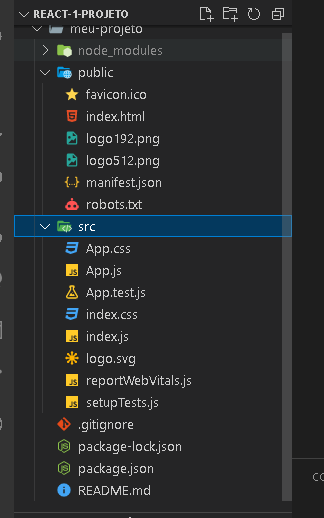
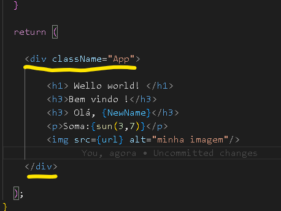

O que é React
Uma biblioteca js para criação de interfaces.
Utilizado para construir SPAs (Single Page Application).
Baseado em componentes.
Utiliza o JSX para renderizar o html.
E aplica o Virtual Dom para realizar as alterações de Dom.
Podemos Adicionar a um projeto ou criar um projeto com ele.
Site do React, e lá você tem acesso a sua documentação:
create-react.app
Instalando o React
Para instalar o React vamos utilizar uma ferramenta chamada Create React App.
Recebemos todos os arquivos da biblioteca e temos como executá-la.
Para utilizar precisamos do Node e também npm.
Essa ferramenta também otimiza o app gerado para produção.
E aplica o Virtual Dom para realizar as alterações de Dom.
É possível iniciar a aplicação com npm start.
Como criar seu primeiro projeto em React:
* tem que ter instalado o Node e o npm no seu computador.
Com o VScode aberto, já na pasta que você vai criar esse projeto.
Abra o terminal, e coloque esse comando:
npx create-react-app meu-projeto e clique em enter,
pode demorar um pouco para instalar.
Depois de instalado vai te dá algumas informações, como;
npm start Para inicializar o projeto onde vamos trabalhar.
npm run build Para gerar o build do projeto.
// Para iniciar o projeto que criamos, tem que primeiro ir até a pasta do projeto:
cd meu-projeto Para você entra na pasta do projeto que foi criado.
// Para o projeto rodar, inicializar:
npm start
Vai executar seu navegador automaticamente, se não, você veja os links que serão gerados e clica em um deles.
Irá abrir essa página no seu navegador :

Veja os arquivos que ele criou no VScode:

Entendendo o JSX
O JSX é como um HTML, porém dentro do código JavaScript.
É a principal maneira de excrever HTML com o React.
Podemos interpolar variáveis, inserindo ela entre {}.
É possível também executar funções em JSX.
Inserir valores em atributos de tags também é válido em JSX.
Aulas Práticas:
* Abra o projeto que foi criado na última aula, colque esses comandos no terminal;
Para iniciar o projeto, dentro da pasta dele:
npm start.
Para encerrar, fechar a conexão clique em:
CRTL + C .
o HTML DEVE ESTÁ CORRETO!!
Esse é o print do código de como fica a parte do App:
Repare que no início, temos a importação, no caso desse código está importando o css,
que será usado nessa parte do código.
Já no final do código ele vai exporta o que foi criado, ali.
Veja o print:

E no meio temos a função, onde criamos muitas coisas entre elas criar outra função,
que vai retorna a configuração que fizermos ali dentro.
Criando uma variável e fazer a interpolação
* Dentro da function crie uma variável, a minha terá o nome de "name':
const name = 'Giovani'
E para chamar essa variável se usa o { } , dentro da function mas na parte de return:
< h3 > Olá, { name }< /h3>
* Assim será exibido na página o nome.
Veja como fica no código:
Pode se usar esse comando por exemplo para processar esse "nome":
// cria uma nova variável
const NewName = name.toUpperCase( );
* Deixará o que estiver dentro da variável name, com as letras maiúsculas.
// para chamar no html e ser exibido na página
< h3 > Olá, { newName }< /h3>
Executando funcionalidades do JavaScript:
// No return, na parte da tags, adicione a tag "p"
< p > Soma: { 3+2 } < /p >
Podemos criar funcões dentro das funções.
Dentro da function App, crie outra "function", que vai retorna a soma de valores:
function sun(a,b){
______return a + b ;
__}
Na hora de chamar chamamos a função 'sun' e passamos o valor:
< p > Soma: { sun( 3, 7 ) } < /p >
Alterar atributos:
* Vamos alterar uma imagem
// criamos a variável que vai guarda essa imagem
const url = 'https://via.placeholder.com/150';
* neste caso a imagem é para vir da internet, mas pode ser de outro local, pasta.
// Para ser exibida na página, usando a tag "img"
< img src={ url } alt="minha imagem" / >
Importante:
* Só pode ter um elemento Pai e deve ter, dentro do "return",
veja na imagem do print do código, se não tivesse essa "div" estaria dando erro:

A palvra class não deve ser usada no React,
use a className essa deve ser usada para fazer as classes.
Criando Componentes no React
Permite dividir a aplicação em partes;
Os componentes renderizam JSX, assim como o App.js (que é um componente);
Precisamos criar um arquivo de componente;
E importá-lo onde precisamos utilizar.
Normalmente fica em uma pasta chamada components
Vamos para a prática:
* Dentro da pasta src, crie uma pasta com o nome components,
*Dentro da pasta "components" crie um arquivo com o nome HelloWorld.js
** É bom usar sempre letras maiúsculas no inicio das palavras.
* Com o "HelloWorld" aberto, vamos criar uma function com o mesmo nome.
function HelloWorld( )
* Já coloque o export:
export default HelloWorld ; .
* Dentro da function, vamos criar o return:
return (
)
* Dentro do return, colocamos o HTML:
< div > ->> precisa ter o pai
____< h1 > meu primeiro componente < /h1 >
< /div >
Veja na imagem como fica o HelloWorld.js
Para ele poder aparecer na página, tem que importa onde você quer usá-lo:
* Vai no "App.js" e vamos importa ele lá .
Com o App.js aberto, na parte de cima importe o "HelloWorld";
import HelloWorld from './components/HelloWorld';
Agora só adiciona dentro do "return", como uma tag:
< HelloWorld/ >
Veja como fica o código na hora de importa:

Um componente tem que ser reutilizavél, ou seja pode ser usado em outro lugares.
* Vamos criar outro componente, com o nome de "Frase".
* O jeito de criar é igual ao componente "HelloWorld".
** O componente "Frase" pode ser reutilizado depois em vários lugares e várias vezes.
Veja na imagem o código:
Trabalhando com Props
As props são valores passados para componentes.
Podem ser deixadas dinâmicas , ou seja mudando a execução,
por causa do valor da prop.
O valor é passado como um atributo na chamada do componente.
E precisa ser resgatado dentro de uma propriedade/argumento,
chamada props na função de definição do componente.
As props são somente de leitura.
Aula prática:
* No projeto que criamos :
* Na pasta de components, crie um novo componente com o nome:
SayMyName
Na hora de criar a function passa o argumento props.
Veja como é o código na imagem:
* Dentro do return, adicione uma div e um paragráfo.
* Dentro do paragráfo você vai colocar assim:
Fala ai { props.name }, suave?
Veja imagem do código:
* Agora para inserir na página:
* No App.js import o SayMyName para poder usar esse componente
E aqui iremos passar o valor do atributo props, que está na esperando receber algo.
< SayMyName nome="Giovani" / >
Agora na página irá aparecer o texto que está no SayMyName,
com o nome que você adicionar aqui.
Pode ser passado usando uma variável, você cria a variável e passa no parâmetro.
Veja o código :

Exemplo usando mais de um props
* Crie outro componente dentro da pasta components, com o nome:
Pessoa.js
* Dentro dele crie a "function", desse jeito:

* Para ser inserido na página, import no componente "App.js".
** Para facilitar ainda mais, podemos fazer algumas modificações, retirar os props:
e adiciona variáveis como atributos.